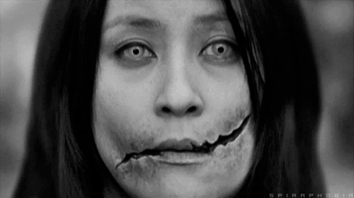

 Es el caso de Kuchisake-onna la mujer con la boca cortada, una aterradora leyenda que a día de hoy sigue generando pánico entre los jóvenes de la ciudad. Cuenta la leyenda que hace muchos años una bellísima mujer contrajo matrimonio con un destacado y respetable samurái. Al parecer la mujer era tan hermosa como promiscua, y es que además de contar con numerosos pretendientes que la seguían cortejando a pesar de su matrimonio, ella misma sucumbía a los placeres de la carne con muchos de ellos. Su marido que al principio desconocía las prácticas extramatrimoniales de su joven esposa se enteró un día de todos los episodios de adulterio que había cometido. Según cuenta la leyenda, el samurái entro en un estado de cólera increíble y se dirigió hacia su mujer cortándole la boca de lado a lado mientras le gritaba “¿Crees que eres hermosa?”. Una vez hubo terminado de rajar completamente la boca de la joven terminó la faena diciéndole “¿Quién pensará que eres hermosa ahora?” cabe destacar que la mujer con la boca cortada falleció dejando a su marido con la eterna culpa de su muerte. Se dice que a partir de ese momento la mujer regresó al mundo terrenal convertida en un yokai (espíritu demoníaco) y que vagaba por las calles de Tokio buscando venganza entre todo aquel hombre al que se encontrara. La leyenda asegura que es posible encontrar a este espíritu andando por las calles de la ciudad con una mascarilla quirúrgica en la boca (algo que no sorprende teniendo en cuenta las costumbres sanitarias de los japoneses). Cuando el espíritu se cruza con algún joven simplemente se detiene frente a él y le pregunta “¿Soy hermosa?”. Si dices que sí la mujer se arrancará la máscara y te preguntará “¿Y ahora?”, en ese momento sus víctimas gritarán despavoridas y esta las asesinará cortándoles la cabeza al interpretar en sus alaridos un claro no. Si la segunda vez que pregunta la respuesta es sí dará exactamente igual, ya que el espíritu reaccionará realizando el mismo corte en su víctima para que experimente su dolor.